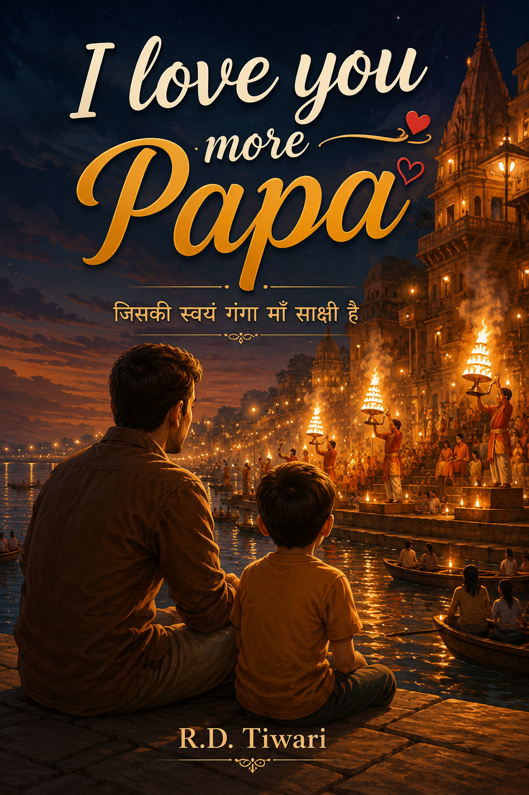

पढ़ने के लिए तैयार
I Love you more, पापा
मणिकर्णिका घाट से एक अनकही प्रेम कहानी — पिता और पुत्र के बीच के उस रिश्ते की, जिसे शब्दों में बाँधना मुश्किल है।
ऋषिकेश की कलम से
स्याही सूखी नहीं अभी, कलम ने फिर पुकारा है,
गंगा की उस लहर में आज, कोई किस्सा फिर से जागा है।
बरसों की खामोशी तोड़कर, शब्द उतरे हैं घाट की सीढ़ी पर,
आइए, थोड़ी देर बैठिए यहाँ — एक कहानी बहती है, इस पार से उस पार।
आगे की यात्रा

मणिकर्णिका घाट से एक अनकही प्रेम कहानी — पिता और पुत्र के बीच के उस रिश्ते की, जिसे शब्दों में बाँधना मुश्किल है।
बनारस की तंग गलियों में बसी कुछ और अनकही कहानियाँ।
एक और सफ़र, एक और रिश्ता, एक और घर लौटने की कहानी।